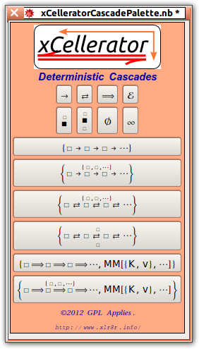
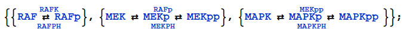
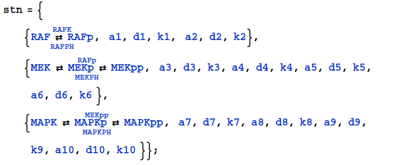

| Cascades | Reference Home |
Cascades combine a sequence of reactions together in a single shorthand arrow.
For example, if a reaction occurs in many steps (or stages) it is simpler to write
then it is to write out each individual reaction:
Extending the concept, it is not necessary to use the same catalyst, e.g, the sequence of reactions

can be represented as

A variety of mass action and Michaelis Menten reaction cascades are implemented in xCellerator. To simplify data entry, a Cascade Palette is included in the default installation.

A classic example is the MAPK (Mitogen Activated Protein Kinase) which can be described by following sequence of reactions:

or by the explicit use of rate constants:
